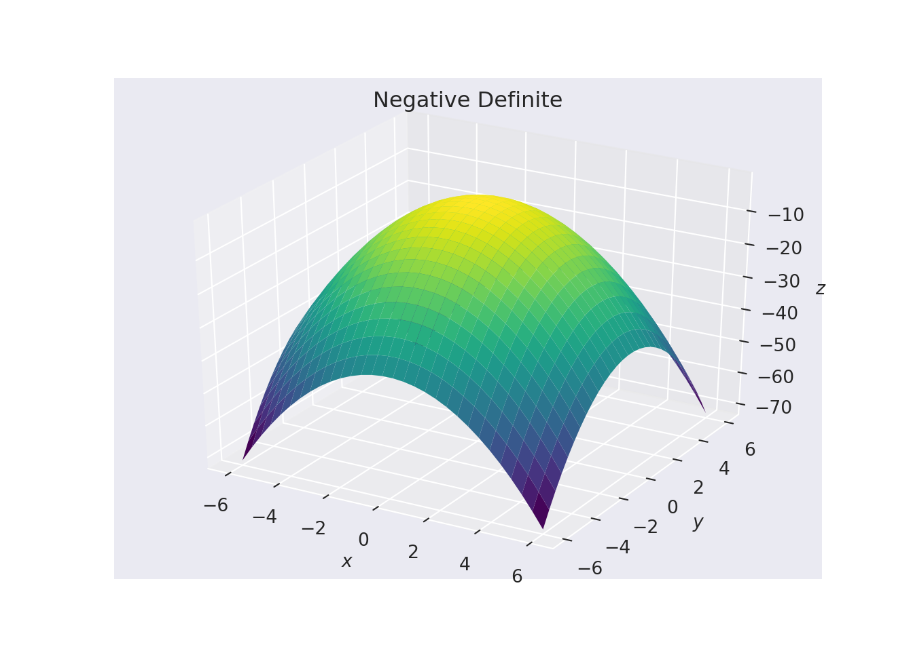
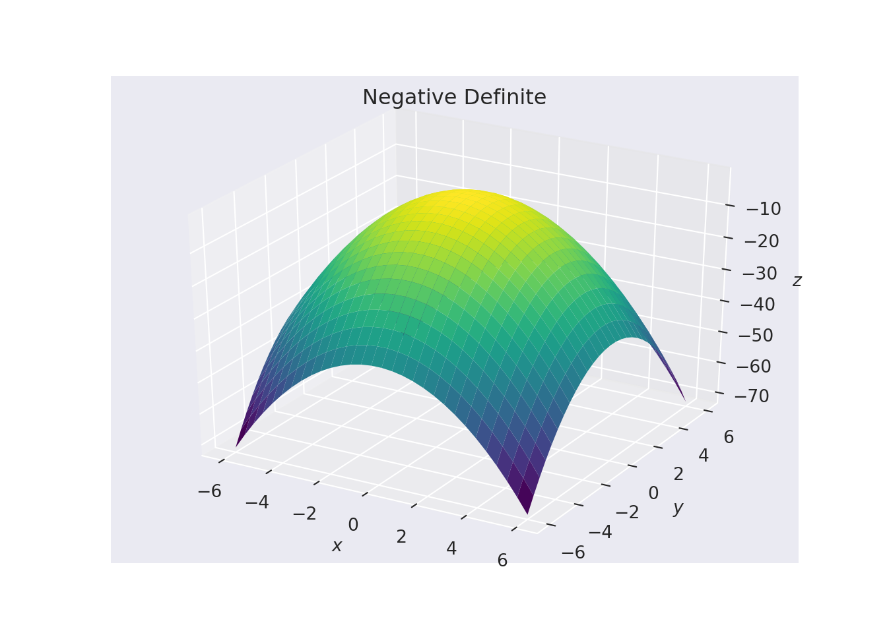
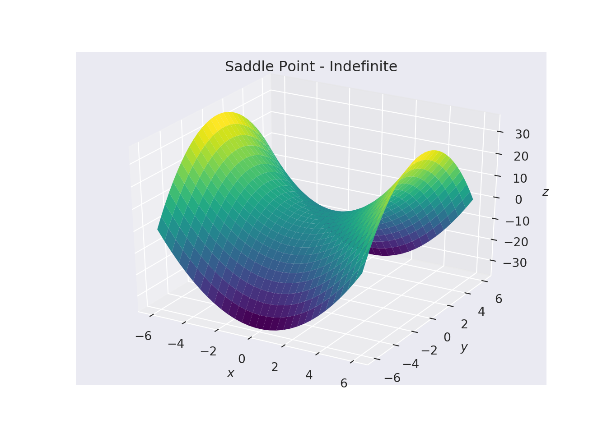
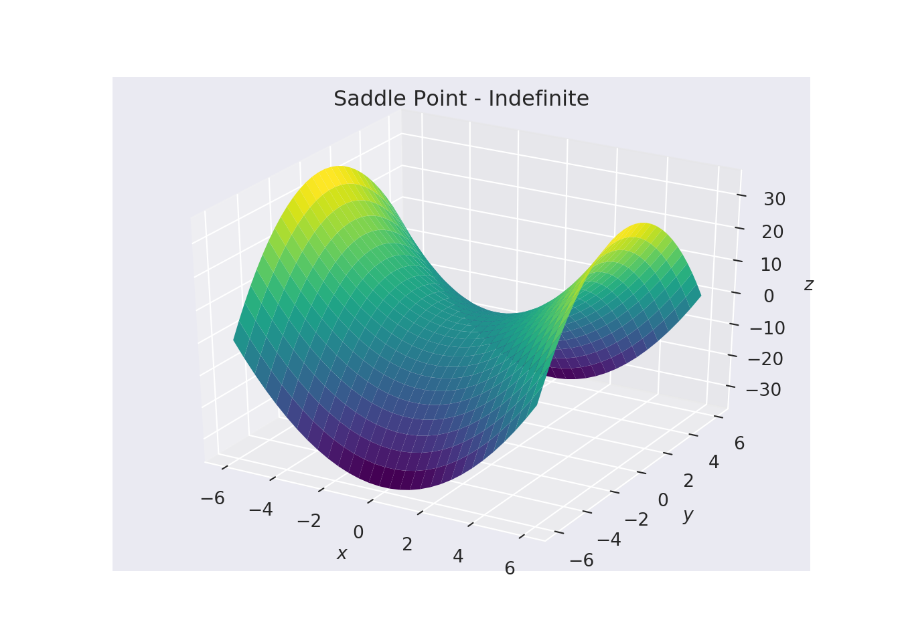
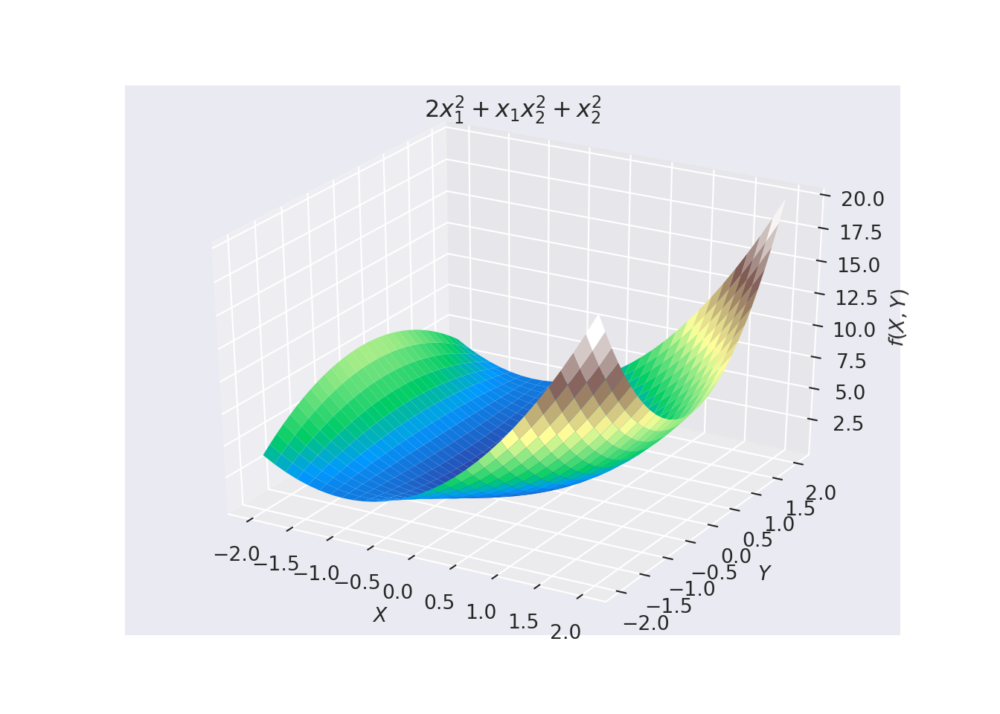
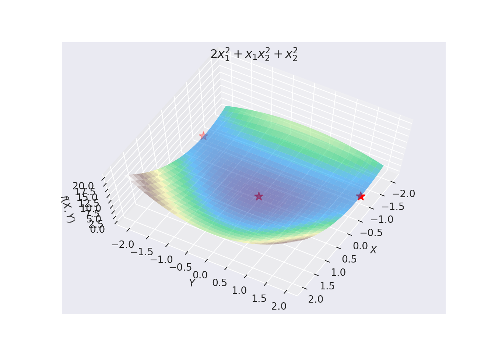

Chapter 5 Multivariate Unconstrained Optimisation
Unconstrained optimisation is optimisation when we know we do not have to worry about the boundaries of the feasible set. \[\begin{equation} \underset{s.t.\ x \in S}{\text{min}} \ \ \ f(x) \end{equation}\] where \(S\) is the feasible set. It should then be possible to find local minima and maxima just by looking at the behaviour of the objective function; and indeed sufficient and necessary conditions. In this chapter these conditions will be derived. The idea of a line in a particular direction is important for any unconstrained optimization methods, we discuss this and derive the slope and curvature of the function \(f\) at a point on the line.
5.1 Terminology for Functions of Several Variables
For a function \(f(\mathbf{x}) \in \mathbb{R}^n\) there exists, at any point \(\mathbf{x}\) a vector of first order partial derivatives, or gradient vector: \[\begin{equation} \nabla f(\mathbf{x}) = \begin{bmatrix} \dfrac{\partial f}{\partial x_1}(\mathbf{x}) \\ \dfrac{\partial f}{\partial x_2}(\mathbf{x}) \\ \vdots \\ \dfrac{\partial f}{\partial x_n}(\mathbf{x}) \end{bmatrix} = \mathbf{g(x)}. \end{equation}\]
f[x_, y_] := x^2/4 - 2 x^2 y - 3 x y + y^4/16
grad[x_, y_] := Grad[f[x, y], {x, y}]
normal[x_, y_] = Simplify[grad[x, y]/Sqrt[grad[x, y].grad[x, y]]]
{
Manipulate[
ContourPlot[f[x, y], {x, -2, 2}, {y, -2, 2},
Epilog -> Arrow[{pt, pt + normal @@ pt}],
PerformanceGoal -> "Quality", Contours -> 20,
PlotRange -> {{-2, 2}, {-2, 2}, {-30, 30}},
ImageSize -> Medium], {{pt, {.01, -0.1}}, Locator},
FrameLabel -> "Click a point to see its normal",
SaveDefinitions -> True],
Plot3D[x^2/4 - 2 x^2 y - 3 x y + y^4/16, {x, -2 , 2}, {y, -2, 2},
PlotRange -> Automatic, ColorFunction -> "DarkRainbow",
ImageSize -> Large]
}
Mathematica Demo of Gradient.
It can be shown that if the function \(f(\mathbf{x})\) is smooth, then at the point \(\mathbf{x}\) the gradient vector \(\nabla f(\mathbf{x})\) (denoted by \(g(\mathbf{x})\)) is always perpendicular to the contours (or surfaces of constant function value) and is the direction of maximum increase of \(f(\mathbf{x})\) as seen in the Figure above. You can copy the Mathematica code to generate the output above. The manipulation construct will allow you to move the point around to see the gradient at different contours.
If \(f(\mathbf{x})\) is twice continuously differentiable then at the point \(\mathbf{x}\) there exists a matrix of second order partial derivatives called the Hessian matrix: \[\begin{equation} \mathbf{H(x)}=\begin{bmatrix} \dfrac{\partial^2 f}{\partial x_1^2}(\mathbf{x}) & \dfrac{\partial^2 f}{\partial x_1 \partial x_2}(\mathbf{x}) & \ldots & \dfrac{\partial^2 f}{\partial x_1 \partial x_n}(\mathbf{x}) \\ \dfrac{\partial^2 f}{\partial x_2\partial x_1}(\mathbf{x}) & \ddots & & \\ \dfrac{\partial^2 f}{\partial x_n \partial x_1}(\mathbf{x}) & \ldots & & \dfrac{\partial^2 f}{\partial x_n^2}(\mathbf{x}) \end{bmatrix}= \nabla^2f(\mathbf{x}) \end{equation}\]
5.1.0.1 Example
Let \(f(x_1, x_2) = 5x_1 + 8x_2 + x_1x_2 - x_1^2 - 2x_2^2\). Then: \[\begin{equation*} \nabla f(\mathbf{x}) = \begin{bmatrix} 5 + x_2 - 2x_1 \\ 8 + x_1 - 4x_2\end{bmatrix}, \end{equation*}\] and \[\begin{equation*} \nabla^2f(\mathbf{x}) = \begin{bmatrix} -2 & 1 \\ 1 & -4\end{bmatrix}. \end{equation*}\]
Definition 5.2 (Directional Derivative) Let \(f:\mathbb{R}^n\to \mathbb{R}\) be a real-valued function and let \(d\) be a feasible direction at \(\mathbf{x}\in S\). The directional derivative of \(f\) in the direction of \(d\), denoted by \(d^T\nabla f(\mathbf{x})\), is given by: \[\begin{equation} \nabla f^Td=\lim_{\alpha\to 0}\dfrac{f(\mathbf{x}+\alpha d)-f(\mathbf{x})}{\alpha} \end{equation}\] If \(\lVert d\rVert=1\), then \(d^T\nabla f(\mathbf{x})\) is the rate of increase of \(f\) at \(\mathbf{x}\) in the direction \(d\). To compute the above directional derivative, suppose that \(\mathbf{x}\) and \(d\) are given. Then, \(f(\mathbf{x}+\alpha d)\) is a function of \(\alpha\), and: \[\begin{equation} d^T\nabla f(\mathbf{x})=\frac{d}{d\alpha} f(\mathbf{x}+\alpha d)\big\vert_{\alpha=0}. \end{equation}\]
5.2 A Line in a Particular Direction in the Context of Optimisation
A line is a set of points \(\mathbf{x}\) such that: \[\begin{equation} \mathbf{x} = \mathbf{x}^\prime + \alpha \mathbf{d}, \ \ \ \forall \ \alpha,\tag{5.1} \end{equation}\] where \(\mathbf{d}\) and \(\mathbf{x}^\prime\) are given. For \(\alpha \geq 0\) Equation (5.1) is a half-line. The point \(\mathbf{x}^\prime\) is a fixed point (corresponding to \(\alpha = 0\)) along the line, \(\mathbf{d}\) is the direction of the line. For instance, if we take the fixed point \(\mathbf{x}'\) to be \((2,2)^T\) and the direction \(\mathbf{d} = (3,1)^T\) then the Figure below shows the line in the direction of \(\mathbf{d}\).

An Example of a Line in a Particular Direction.
The vector \(\mathbf{d}\) in indicated by the arrow. If we normalise the vector \(\mathbf{d}\) so that \(\mathbf{d}^T\mathbf{d}=\sum_id_i^2=1\). This does not change the line, but only the value of \(\alpha\) associated with any point along the line. For Example:
import numpy as np
from numpy import linalg as LA
d = np.array([3, 1])
alpha = LA.norm(d, 2)
print(d)## [3 1]print(alpha)## 3.1622776601683795norm_d = d/alpha
print('The normalised vector d is:')## The normalised vector d is:print(norm_d)## [0.9486833 0.31622777]print('The normalised d^Td gives:f', np.dot(norm_d,norm_d))## The normalised d^Td gives:f 0.9999999999999999print('So alpha x normalised d returns d:')## So alpha x normalised d returns d:print(alpha*norm_d)## [3. 1.]We now use the gradient and the Hessian of \(f(\mathbf{x})\) to derive the derivative of \(f(\mathbf{x})\) along a line of any direction. For a fixed line of a given direction like Equation (5.1) we see that the points on the line is a function of \(\alpha\) only. Hence a change in \(\alpha\) causes change in all coordinates of \(\mathbf{x}(\alpha)\). The derivative of \(f(\mathbf{x})\) with respect to \(\alpha:\) \[\begin{equation} \frac{df\left (\mathbf{x} (\alpha)\right)}{d\alpha} = \frac{\partial f(\mathbf{x}(\alpha))}{\partial x_1} \frac {dx_1(\alpha)}{d\alpha} + \frac{\partial f(\mathbf{x}(\alpha))}{\partial x_2}\frac {d x_2(\alpha)}{\partial\alpha} +\cdots +\frac{\partial f(\mathbf{x}(\alpha))}{\partial x_n} \frac{d x_n(\alpha)}{d\alpha} \tag{5.2} \end{equation}\] The Equation (5.2) represents the derivative of \(f(\mathbf{x})\) at any point \(\mathbf{x}(\alpha)\) along the line. The operator \(\frac{d}{d\alpha}\) can be expressed as: \[\begin{equation} \frac{d}{d\alpha} = \dfrac{\partial}{\partial x_1}\frac {d x_1}{ d\alpha} + \frac{\partial}{ \partial x_2}\dfrac {d x_2}{d \alpha} + \cdots +\dfrac{\partial}{\partial x_n}\dfrac {dx_n}{d\alpha} = \mathbf{d}^T\nabla \tag{5.3} \end{equation}\] The slope of \(f(\mathbf{x})\) at \(\mathbf{x}(\alpha)\) can be written as: \[\begin{equation} {df\over d\alpha} = \mathbf{d}^T\nabla f(\mathbf{x}(\alpha)) = \nabla f (\mathbf{x}(\alpha))^T\mathbf{d}.\tag{5.4} \end{equation}\] Likewise, the curvature of \(f(\mathbf{x}(\alpha))\) along the line: \[\begin{equation} {d^2 f\over d\alpha^2} = {d\over d\alpha} \left({df(\mathbf{x}(\alpha))\over d\alpha}\right) = \mathbf{d}^T\nabla \left(\nabla f^T \mathbf{d}\right) = \mathbf{d}^T\nabla^2f\mathbf{d}, \end{equation}\] where \(\nabla f\) and \(\nabla^2f\) are evaluated at \(\mathbf{x}(\alpha)\). These (slope and curvature) when evaluated at \(\alpha\)=0 are respectively known as derivative (also called slope since \(f=f(\alpha)\) is now a function of the single variable \(\alpha\)) and curvature of \(f\) at \(x'\) in the direction of \(d\).
5.2.0.1 Example
Let us consider the Rosenbrock’s function: \[\begin{equation} f(\mathbf{x})=100(x_2-x_1^2)^2 + (1-x_1)^2 \tag{5.5} \end{equation}\] If \(\mathbf{x}^\prime = {0 \choose 0}\) then show that the slope of \(f(\mathbf{x})\) along the line generated by \(\mathbf{d} = {1 \choose 0}\) is \(\mathbf{d}^T\nabla f=-2\) and the curvature is \(\mathbf{d}^T G\mathbf{d} = 2\) where \(G=\nabla^2 f(\mathbf{x}^\prime).\)
Solution:
\[\begin{eqnarray*} \bigtriangledown f = \begin{bmatrix} -400x_1(x_2 - x_1^2) - 2(1 - x_1) \\ 200(x_2 - x_1^2) \end{bmatrix} = \begin{bmatrix} -2 \\ 0 \end{bmatrix} \end{eqnarray*}\] Therefore \(\mathbf{d} \bigtriangledown f = [1\ \ \ 0] \times [-2\ \ \ 0]^T = -2\). Next: \[\begin{eqnarray*} \bigtriangledown^2 f = \begin{bmatrix} -400(x_2 - x_1^2) + 800x_1^2 + 2 & -400x_1 \\ -400x_1 & 200 \end{bmatrix} = \begin{bmatrix} 2 & 0\\ 0 & 200 \end{bmatrix} \end{eqnarray*}\] Thus \(\mathbf{d}^T G \mathbf{d} = [1\ \ \ \ 0] \times \begin{bmatrix} 2 & 0\\ 0 & 200 \end{bmatrix} \times [1\ \ \ \ 0]^T = 2\)
These definitions of slope and curvature depend on the size of \(\mathbf{d},\) and this ambiguity can be resolved by requiring that \(\lVert\mathbf{d}\rVert=1.\) Hence Equation (5.4) is the directional derivative in the direction of a unit vector \(\mathbf{d}\) and this given by \(\nabla f(\mathbf{x})\mathbf{d}^T\). Likewise the curvature along the line in the direction of the unit vector is given by \(\mathbf{d}^T\nabla^2f(\mathbf{x})\mathbf{d}.\)
Since \(\mathbf{x}(\alpha)=\mathbf{x}'+\alpha\mathbf{d}\), at \(\alpha=0\) we have \(\mathbf{x}(0)=\mathbf{x}'\). Therefore, the function value \(f(\mathbf{x}(0))=f(\mathbf{x}')\), the slope at \(\alpha=0\) in the direction of \(\mathbf{d}\) is \(f'(0)=\mathbf{d}^T\nabla f(\mathbf{x}')\) and the curvature at \(\alpha=0\) is \(f''(0)=\mathbf{d}^TG(\mathbf{x}')\mathbf{d}\).
5.3 Taylor Series for Multivariate Function
In the context of optimization involving smooth function \(f(\mathbf{x})\) the Taylor series is indispensable. Since \(\mathbf{x} = \mathbf{x}(\alpha) = \mathbf{x}^\prime + \alpha \mathbf{d}\) for a fixed point \(\mathbf{x}'\) and a given direction \(\mathbf{d},\) the \(f(\mathbf{x})\) at \(\mathbf{x}(\alpha)\) becomes a function of the single variable \(\alpha.\) Hence, \(f(\mathbf{x}) = f(\mathbf{x}(\alpha)) = f(\alpha).\) Therefore, expanding the Taylor series around zero we have: \[\begin{equation} f(\alpha) = f(0+\alpha) = f(0) + \alpha f^\prime(0) + {1\over2}\alpha^2 f^{\prime\prime}(0)+ \cdots \tag{5.6} \end{equation}\] But \(f(\alpha) = f(\mathbf{x}^\prime+\alpha\mathbf{d})\) is the value of the function \(f(\mathbf{x})\) of many variable along the line \(\mathbf{x}(\alpha).\) Hence, we can re-write Equation (5.6) as: \[\begin{equation} f(\mathbf{x}^\prime+\alpha \mathbf{d}) = f(\mathbf{x}^\prime) + \alpha \mathbf{d}^T \nabla f(\mathbf{x}^\prime) + {1\over2} \alpha^2 \mathbf{d}^T \left [\nabla^2 f(\mathbf{x}^\prime)\right ] \mathbf{d} + \cdots \end{equation}\]
5.4 Quadratic Forms
The quadratic function in \(n\) variables may be written as: \[\begin{equation} f(\mathbf{x}) = \dfrac{1}{2}\mathbf{x}^T\mathbf{A}\mathbf{x} + \mathbf{b}^T\mathbf{x} + c, \end{equation}\] where \(c \ \in \mathbb{R}\), \(\mathbf{b}\) is a real \(n\) vector and \(\mathbf{A}\) is a \(n \times n\) real matrix that can be chosen in a non-unique manner. It is usually chosen symmetrical in which case it follows that: \[\begin{equation} a_{11}{x_1}^2+2a_{12}x_1x_2+a_{22}{x_2}^2+2a_{13}x_1x_3+\cdots+a_{nn}{x_n}^2= \sum_{i=1}^n\sum_{j=1}^na_{ij}x_ix_j, \end{equation}\] and: \[\begin{equation} \nabla f(\mathbf{x}) = \mathbf{A}\mathbf{x} + \mathbf{b}; \ \ \ \mathbf{H(x)} = \mathbf{A}. \end{equation}\] The form \(A\) is said to be positive definite if \(A\geq 0\) for all \(\mathbf{x}\) with \(A=0\) iff \(\mathbf{x}=0\). The form \(A\) is said to be positive semi-definite if \(A\geq 0\) for all \(\mathbf{x}\). Similar definitions apply to negative definite and negative semi-definite with the inequalities reversed.
5.4.0.1 Example
Write \(A(\mathbf{x})={x_1}^2+5x_1x_2+4{x_2}^2\) in the matrix form.
Solution: \(A(\mathbf{x})=(x_1,x_2)\left (\begin{array}{c} 1 \; \frac{5}{2}\\ \frac{5}{2}\; 4 \end{array} \right)\left( \begin{array}{c} x_1\\ x_2\end{array} \right)\)
5.5 Stationary Points
In the following chapters we will be concerned with gradient based minimization methods. Therefore, we only consider the minimization of smooth functions. We will not consider the non-smooth minima as they do not satisfy the same conditions as smooth minima. We, however, will consider the case of saddle point. Hence, we assume that the first and the second derivative exist.
We can classify definiteness by looking at the eigenvalues of \(\nabla^2 f(\mathbf{x})\). Specifically:
- If \(\nabla^2 f(\mathbf{x}^*)\) is indefinite, i.e. all \(\lambda_i\) are mixed sign, then \(\mathbf{x}^*\) is a saddle point.
- If \(\nabla^2 f(\mathbf{x}^*)\) is positive definite, i.e. all \(\lambda_i > 0\), then \(\mathbf{x}^*\) is a minimum.
- If \(\nabla^2 f(\mathbf{x}^*)\) is negative definite, i.e. all \(\lambda_i < 0\), then \(\mathbf{x}^*\) is a maximum.
- If \(\nabla^2 f(\mathbf{x}^*)\) is positive semi-definite, i.e. all \(\lambda_i \geq 0\), then \(\mathbf{x}^*\) is a half cylinder.
These can be seen in the Figure below:
 
 

In summary:
Let \(G = \nabla^2 f(\mathbf{x})\), i.e. the Hessian.
- \(G(x)\) is positive semi-definite if \(x^TGx \geq 0, \quad \forall x\)
- \(G(x)\) is negative semi-definite if \(x^TGx \leq 0, \quad \forall x\)
- \(G(x)\) is positive definite iff \(x^TGx > 0, \quad \forall x \neq 0\)
- \(G(x)\) is negative definite iff \(x^TGx < 0, \quad \forall x \neq 0\)
- \(G(x)\) is indefinite iff \(x^TGx\) is mixed negative and positive
and:
- \(f(x)\) is concave iff \(G(x)\) is negative semi-definite
- \(f(x)\) is strictly concave iff \(G(x)\) is negative definite
- \(f(x)\) is convex iff \(G(x)\) is positive semi-definite
- \(f(x)\) is convex if \(G(x)\) is positive definite
5.5.1 Tests for Positive Definiteness
There are a number of ways for us to test for positive or negative definiteness. Namely;
5.5.1.1 Compute the Eigenvalues
5.5.1.1.1 Example
Classify the stationary points of the function \[f(\mathbf{x}) = 2x_1^2 + x_1 x_2^2 + x_2^2.\]
Solution:
The stationary points are the solutions of \[\begin{eqnarray*} \dfrac{\partial f}{\partial x_1}&=&4x_1+{x_2}^2=0\\ \dfrac{\partial f}{\partial x_2}&=&2x_1x_2+2x_2=0 \end{eqnarray*}\] which gives \(\mathbf{x}_1=(0,0)^T\, , \mathbf{x}_2=(-1,2)^T\ \ \ \ \text{and}\ \ \ \ \mathbf{x}_3=(-1,-2)^T.\) The Hessian matrix is: \[ G=\left ( \begin{array}{cc} 4&2x_2\\ 2x_2&2x_1+2\\ \end{array}\right ) \] Thus: \[ G_1=\left ( \begin{array}{cc} 4&0\\ 0&2 \end{array}\right ) \] The eigenvalues are the solution of \[(4-\lambda)(2-\lambda)=0\] which gives \(\lambda=4,2\). Thus \(\mathbf{x}_1\) correspond to a minimum. Similarly: \[ G_2=\left ( \begin{array}{cc} 4&4\\ 4&0 \end{array}\right ) \] has eigenvalues: \[\lambda=2+\sqrt{20},\, 2-\sqrt{20}\] Thus \(\mathbf{x}_2\) correspond to a saddle point. Finally \[ G_3=\left ( \begin{array}{cc} 4&-4\\ -4&0 \end{array}\right ) \] has the same eigenvalues as \(G_2\) and therefore \(\mathbf{x}_3\) corresponds to a saddle point.

5.5.1.2 Principle Minors
From the Hessian we can compute the determinant of all subminors. If these are all greater than zero, then the Hessian is positive definite. Utilising the example above. If: \[ G_1=\left ( \begin{array}{cc} 4&0\\ 0&2 \end{array}\right ) \] Then the first subminor is just det\(\lvert 4 \rvert\) which is \(> 0\). The second and final subminor is the entire matrix, so: \[ \text{det}\left \lvert \begin{array}{cc} 4 & 0 \\ 0 & 2 \end{array} \right \rvert = 8 - 0 > 0. \] Therefore \(G_1\) is positive definite. \(G_2\) and \(G_3\) are dealt with similarly. However, to prove negative definiteness we need to prove \((-1)^k D_k > 0\), where \(D\) is the determinant of the \(k\)-th principle minor.
This approach would be preferable when dealing with the case of large matrices.
5.6 Necessary and Sufficient Conditions
5.6.0.1 Example
Let \(f(\mathbf{x})=x_1^2+x_2^2\). Show that \(\mathbf{x}=(0,0)^T\) satisfies the FONC, the SONC and SOSC hence \((0,0)^T\) is a strict local minimiser. We see that \(\nabla f(\mathbf{x})=(2x_1,2x_2)=0\) if and only if \(x_1=x_2=0\). It also can be easily shown that for all \(\mathbf{d}\neq 0\), \(\mathbf{d}^T\nabla^2 f(x)\mathbf{d}=2d_1^2+2d_2^2>0\). Hence \(\nabla^2 f(\mathbf{x})\) is positive definite.
5.6.0.2 Example
\[f(x_1,x_2) = x_1^4 + x^4_2\] \(\nabla f(\mathbf{x}) = \begin{pmatrix} 4x^3_1 \\ 4x^3_2 \end{pmatrix}\). The only stationary point is \((0\ 0)^T.\) Now the Hessian \(\nabla^2f=\begin{pmatrix} 12x^2_1 & 0 \\ 0 & 12x^2_2 \end{pmatrix}.\) At the origin the Hessian is \(\begin{pmatrix} 0& 0 \\ 0 & 0\end{pmatrix}\) and so there is no prediction of the minimum from the test although it is easy to see that the origin is a minimum.
5.6.0.3 Example
\[f(x_1,x_2) = {1\over 2c} \left({x^2_1\over a^2} + {x^2_2\over b^2}\right),\] where \(a,b,\) and \(c\) are constants. \(\nabla f(\mathbf{x}) = \begin{pmatrix} {x_1\over ca^2} \\ {-x_2\over cb^2}\end{pmatrix}.\) So the only stationary point is \((0 \ 0)^T.\) The Hessian is \({\nabla}^2 f(\mathbf{x}) = \begin{pmatrix} {1\over ca^2} & 0 \\ 0 & - {1\over cb^2}\end{pmatrix}.\) This is clearly indefinite and hence \((0\ 0)^T\) is a saddle point.
Thus in summary, the necessary and sufficent condition for \(\mathbf{x}^*\) to be a strong local minimum are:
- \(\nabla f(\mathbf{x}^*)=0\)
- Hessian is positive definite
5.6.1 Exercises
- Find the gradient vectors of the following functions (where \(\mathbf{x}\in \mathbb{R}^n\)):
- \(f(\mathbf{x})=\mathbf{c}^T\mathbf{x},\quad \mathbf{c}\in \mathbb{R}^n\)
- \(f(\mathbf{x})=\frac{1}{2}\mathbf{x}^T\mathbf{x}\)
- \(f(\mathbf{x})=\frac{1}{2}\mathbf{x}^TG\mathbf{x}\) where \(G\) is symmetric
- Find the slope and the curvature of the following functions.
- \(f(\mathbf{x}) = 100 (x_2 - x_1^2) + (1-x_1)^2\) at \((0,0)^T\) in the direction of \((1,0)^T\).
- \(f(\mathbf{x}) = x^2_1 - 2x_1 + 3x_1 x_2^2 + 4x_2^3\) at \((-1,1)^T\) along \((-1,0)^T.\)
- Use the necessary condition of optimality to determine the optimiser of the following function \[f(x_1,x_2)=(x_1-1)^2+(x_2-1)^2+x_1x_2\]
- Prove that for a general quadratic function \(f(\mathbf{x})=c+\mathbf{b}^T\mathbf{x}+\frac{1}{2}\mathbf{x}^TG\mathbf{x}\), the Hessian \(G\) of \(f\) maps differences in position into differences in gradient, i.e., \(\mathbf{g}^1-\mathbf{g}^2=G(\mathbf{x}^1-\mathbf{x}^2)\).
- For the following functions, find the points where the gradients vanish, and investigate which of these are local minima, maxima or saddle.
- \(f(x_1, x_2) = x_1(1+x_1) + x_2 (1+x_2) - 1.\)
- \(f(x_1, x_2) = {x_1}^2 + x_1x_2+{x_2}^2.\)
- Consider the function \(f : R^2\to R\) determined by
\[f(x)=x^T\left [ \begin{array}{cc} 1 & 2\\ 4 & 8 \end{array} \right]x+x^T \left [ \begin{array}{c} 3\\ 4 \end{array} \right] +6\]
- Find the gradient and Hessian of \(f\) at the point \((1,1)\).
- Find the directional derivative of \(f\) at the point \((1,1)\) in the direction of the maximal rate of increase.
- Find a point that satisfies the first order necessary condition (FONC). Does the point also satisfy the second order necessary condition (SONC) for a minimum?
- Find the stationary points of the function \[f(x_1,x_2)=\left ({x_1}^2-4\right)^2+{x_2}^2\] Show that \(f\) has an absolute minimum at each of the points \((x_1,x_2)=(\pm 2,0)\). Show that the point \((0,0)\) is a saddle point.
- Show that the point \(x^*\) on the line \(x_2-2x_1=0\) is a weak global minimiser of \[f(x)=4{x_1}^2-4x_1x_2+{x_2}^2\]
- Show that \[f(x)=3{x_1}^2-{x_2}^2+{x_1}^3\] has a strong local maximiser at \((-2,0)^T\) and a saddle point at \((0,0)^T\), but has no minimisers.